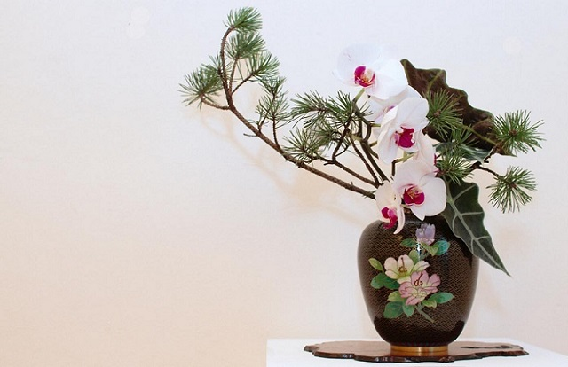
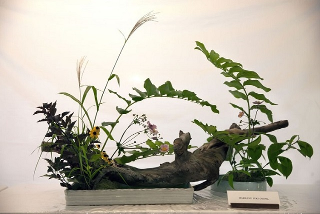
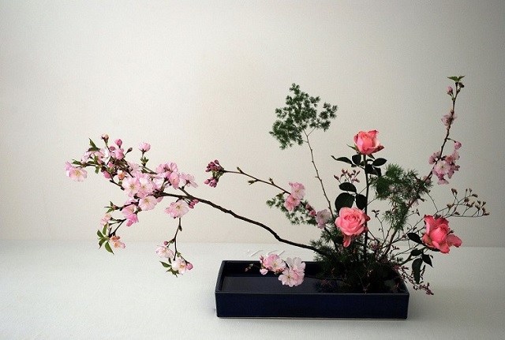
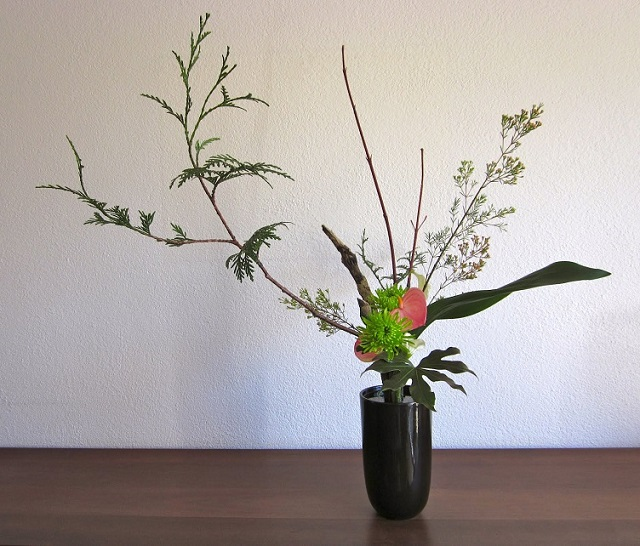
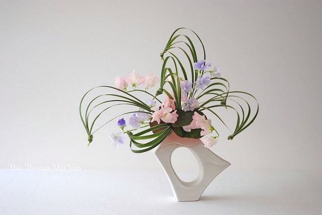

Phan Minh, 8-3-2019
Hoa từ lâu đã xuất hiện và quá quen thuộc với cuộc sống của chúng ta. Mỗi ngày chúng ta ngắm nhìn những bó hoa, cắm những bình hoa đẹp nhưng có mấy ai quan tâm đến ý nghĩa của những loài hoa này. Nhưng đối với người Nhật Bản, hoa lại mang một ý nghĩa quan trọng và tùy trường hợp và sự kiện mà sự sáng tạo lại khác nhau.
Người Nhật Bản nổi tiếng về nghệ thuật cắm hoa trên thế giới. Họ chú trọng chủ yếu vào đường nét và sự hài hòa của các loài hoa. Nghệ thuật Ikebana thường được biết đến dưới cái tên Kadou - Hoa đạo. Loại hình nghệ thuật này đã xuất hiện hơn 600 năm ở Nhật Bản và là một trong những loại hình nghệ thuật truyển thống nổi tiếng trên thế giới.
Người Nhật Bản nổi tiếng về nghệ thuật cắm hoa trên thế giới.
Ikebana hay còn được biết đến với cái tên Kadou - “hoa đạo”, là bộ môn nghệ thuật đặc trưng của Nhật Bản về cách sắp xếp bố trí các loại hoa chứ không chỉ đơn thuần là cắm hoa thông thường. Ra đời từ hơn 1500 năm trước tại Kyoto, Ikebana ban đầu được bắt đầu với những bông hoa cúng dâng lên Đức Phật trong các ngôi chùa cổ. Cách sắp xếp Ikebana khi đó vẫn khá giản đơn và chỉ hướng đến làm nổi bật ba yếu tố tượng trưng chính là trời, đất và con người. Tới thế kỷ 15, Ikebana dần phát triển với cấu trúc cầu kỳ hơn, đòi hỏi sự kết hợp hài hòa không chỉ giữa các loại hoa với bình cắm mà còn với cả cấu trúc căn phòng cũng như ngoại cảnh. Đặc trưng nổi bật cho phong cách Ikebana thời kỳ này là Rikka, nghệ thuật cắm hoa đã khởi nguồn cho một làn sóng Ikebana lan khắp Nhật Bản. Và từ đó tới nay, Ikebana đã trở thành một loại hình nghệ thuật, văn hóa Nhật Bản quen thuộc với tất cả người dân xứ sở hoa anh đào.
Trước đây, Ikebana chỉ được lưu truyền và biết đến trong giới Samurai và tầng lớp tăng lữ. Tuy nhiên bởi vẻ đẹp và tính hấp dẫn của mình, nghệ thuật Ikebana đã dần chinh phục cư dân Nhật. Vào thế kỷ 19 dưới thời đại Meiji, Ikebana được nâng lên thành một bộ môn giảng dạy ở các trường nữ sinh; chính vì vậy, có nhiều phụ nữ đã tiếp cận và học được bộ môn nghệ thuật này. Thông qua đặc trưng công việc của phụ nữ thời đó là nội trợ, họ đã truyền dạy cho con cháu nghệ thuật cắm hoa này.

Ikebana – Truyền thống văn hóa ở Nhật Bản.
Nghệ thuật cắm hoa Ikebana Nhật Bản đòi hỏi người nghệ nhân phải có con mắt thẩm mỹ nhất định, một bàn tay khéo léo, quan trọng nhất là khả năng sáng tạo. Ikebana không chỉ đơn thuần áp dụng các quy tắc, biểu trưng cơ bản mà còn cần tới độ nhạy bén của người nghệ nhân để mang lại sự cách tân trong từng tác phẩm.
Nghệ thuật cắm hoa Ikebana được sinh ra như là biểu trưng của thiên nhiên giúp cho người cắm cũng như người thưởng hoa thanh sạch đầu óc và thanh thản tâm hồn. Ít ai biết được, toàn bộ quá trình bài trí hoa cũng như thưởng hoa thực chất là một dạng thiền mà ở đó chỉ có một bầu không khí yên lặng. Sáng tạo được một tác phẩm cắm hoa nghệ thuật cũng như lĩnh hội được vẻ đẹp của tác phẩm Ikebana đó, chính là khi con người bước vào một cảnh giới tinh thần cao hơn.
Sự phát triển lên đến đỉnh cao của nghệ thuật cắm hoa ở Nhật có thể được lý giải bởi tình yêu của người Nhật đối với thiên nhiên. Vẻ đẹp của thiên nhiên được mọi người ở khắp mọi nơi yêu thích nhưng ở Nhật, người ta thật sự nâng niu, và hiểu rõ giá trị của thiên nhiên, và tình yêu thiên nhiên của ngươi Nhật lớn đến nỗi gần như trở thành một tôn giáo. Người Nhật luôn cảm thấy có một mối liên hệ, gắn bó chặt chẽ với thiên nhiên xung quanh, và ngay cả trong đời sống hiện đại, sự đô thị hóa diễn ra mạnh mẽ, đường nhựa, bê tông trải dài khắp nơi thì họ vẫn mong muốn tạo một chút không gian thiên nhiên ở gần bên. Du khách nước ngoài khi đến Tokyo thường hay bất ngờ khi thấy những bình hoa với một hoặc vài bông hoa được treo trên xe, ở các cạnh của kính chắn gió bởi những người lái taxi. Thật khó mà tìm thấy ở Nhật một ngôi nhà nào mà quanh năm không được tô điểm bởi sắc hoa.
Về cơ bản thì Ikebana không đơn thuần hướng đến việc đưa một phần thiên nhiên vào trong ngôi nhà, mà xa hơn là muốn cho thấy cả một thế giới nhiên bao trùm, bằng cách tạo ra một mối liên kết chặt chẽ giữa trong nhà và ngoài trời. Trong khi người Tây phương luôn luôn nhấn mạnh vào các màu sắc và số lượng của vật liệu, hướng sự chú tâm vào vẻ đẹp của các bông hoa thì người Nhật Bản lại đặt nặng về các đường nét của cách xếp đặt, lối bố cục, và họ đã phát triển nghệ thuật cắm hoa bao gồm cả cành, cuống, lá cũng như hoa. Như vậy vật liệu dùng trong nghệ thuật cắm hoa không phải chỉ giới hạn vào màu sắc của bông hoa mà còn có vẻ đẹp nằm trong hình thể của lá và hoa, và trong sự tăng trưởng của hoa lá nơi thiên nhiên. Ngay cả khi chỉ một loại hoa được sử dụng thì người cắm hoa cũng cố gắng để biến bình hoa đó thành một biểu tượng hoàn hảo của thiên nhiên.
Biểu tượng hoàn hảo của thiên nhiên.
Trong cách cắm hoa, cần tới sự hiểu biết về dòng thời gian và người nào có con mắt phân biệt có thể dễ nhận ra được điều này. Sự cắm hoa phải biểu hiện được thời gian, tháng, mùa, cũng như sự tăng trưởng liên tục của vật liệu sử dụng. Chẳng hạn như: Quá khứ: dùng hoa nở hết, trái cây khô hay lá cây khô. Hiện tại: dùng hoa nở nửa chừng hay lá cây hoàn hảo. Tương lai: dùng nụ hoa, nụ lá để hứa hẹn sự tăng trưởng sắp tới. Sự cân nhắc về vật liệu sử dụng cũng cần phải đi đôi với cách xếp đặt, trình bày: Mùa Xuân: cách xếp đặt đầy sức sống với các đường cong biểu hiện sinh lực. Mùa Hạ: cách xếp đặt tỏa ra và tràn đầy. Mùa Thu: cách xếp đặt mỏng và thưa thớt. Mùa Đông: cách xếp đặt đượm buồn và lắng nghỉ. Phương pháp cắm hoa phải mang tính cách tượng trưng, mô tả, nhưng một số hình thể của hoa lá lại phải được phối hợp với phong tục, tập quán và văn hóa. Vào các ngày quốc lễ, lại có một số cách cắm hoa được ấn định trước và vào các dịp lễ hội, các nghi lễ gia đình có thể bị coi là thiếu đầy đủ nếu không theo cách cắm hoa thích hợp và không trưng bày thứ hoa thích hợp. Hoa Cúc trắng là hoa của ngày tết đầu năm, trong khi vào ngày Tết búp bê (mồng 3 tháng 3), người Nhật thường dùng tới hoa Đào, và hoa Diên Vĩ (iris) là thứ hoa của ngày Tết con trai (mồng 5 tháng 5).
Nói một cách tổng quát, cách cắm hoa Nhật Bản gồm ba nhóm hoa hay cành lá xếp đặt theo hình tam giác. Nhóm chính ở giữa, thẳng đứng, nhóm thứ hai nghiêng về một bên so với nhóm chính và nhóm thứ ba ngược lại, nghiêng về phía đối so với nhóm thứ hai. Thêm vào đó, ba đường nét chính trong bình hoa hay lẵng hoa là thứ tượng trưng cho Trời – Đất – Người (Thiên, Địa, Nhân). Chính trong cấu trúc này mà cách cắm hoa được tạo nên. Đường nét quan trọng nhất là cành hoa tượng trưng cho “Trời” (shin). Đây là đường trung tâm của toàn thể bình hoa, lẵng hoa, vì thế người ta đã chọn cành hoa nào mạnh nhất làm công việc này. Tiếp theo cành chính là cành thứ (soe), đại diện cho con người (Nhân). Cành này phải được xếp đặt thế nào để diễn tả rõ đường hướng phát triển, bung ra từ đường trung tâm. Chiều cao của cành thứ bằng 2/3 chiều cao của cành chính, lại có phần hơi nghiêng về cành chính.

Triết lý tiềm ẩn trong nghệ thuật cắm hoa Nhật Bản.
Cành thứ ba (hikae) tượng trưng cho “Đất” (Địa), là phần ngắn nhất, được đặt xoay về phía trước hay hơi đối nghịch với phía gốc của hai cành kia. Tất cả ba phần lại được cột chặt vào một bộ phận giữ và lại phải diễn tả cho thấy sự xuất phát từ một nguồn cội. Sau đó, các bông hoa khác được thêm vào mỗi phần nhưng cách bố cục khéo léo của ba phần chính kể trên được coi là quan trọng nhất. Trong khi cắm hoa, người ta đặt chiếc khay đựng tất cả các hoa, lá, cành... về phía bên phải và bình hoa hay đĩa cắm hoa cách 60 phân trước mặt người cắm hoa. Nếu đặt đĩa cắm hoa gần hơn thì dễ cắm hơn, nhưng để có thể dễ nhận ra cách bố cục thì nên đặt bình hoa xa hơn một chút. Bình hoa cũng nên được đặt hơi cao hơn là hơi thấp, bởi vì nếu đặt thấp, người ta sẽ quen với cách nhìn xuống và ảnh hưởng mang lại sẽ khác khi bình hoa sau này lại được bày trên cao.
Nguyên tắc cơ bản của nghệ thuật sắp hoa Ikebana là tượng trưng cho Trời - Đất và Con người, và Ikebana phải thể hiện được sự hài hòa của 3 yếu tố đó. Có 5 phong cách cắm hoa cơ bản của Ikebana như sau: Rikka Đây là phong cách cắm hoa ra đời sớm nhất và vẫn được phổ biến cho đến ngày nay. Rikka có nghĩa là cắm hoa thẳng đứng, yêu cầu của kiểu cắm hoa này là bình dùng để cắm hoa phải cao và to, hoa cắm trong bình ở tư thế thẳng. Rikka thể hiện vẻ đẹp của tự nhiên. Một bình hoa Rikka luôn có 7 cành thể hiện cho đồi núi, thác nước, thung lũng và những sự vật khác trong tự nhiên.

Rikka thể hiện vẻ đẹp của tự nhiên.
Thiết kế của kiểu Rikka là rộng lớn, thanh tú và nổi bật. Sự sắp xếp cơ bản của 3 cành tạo thành khung cho những cánh hoa. Những cành hoa này thường cân đối và to lớn về tỉ lệ. Một bình hoa Rikka trung bình có kích thước từ 3 đến 5 lần chiều cao hoặc chiều rộng của bình cắm. Một khi chiều dài của cành hoa chính đã được định, những cành hoa còn lại được cân đối theo tỉ lệ với cành chính đó. Một bình hoa Rikka cắm xong sẽ có dạng hình cầu với không gian rất lớn. Shoka Đây là phong cách cắm hoa thông dụng nhất trong Ikebana. Nó có nghĩa là hoa sống. Xét về hình thức thì kiểu cắm hoa Shoka khá đơn giản nhưng để lột tả hết ý nghĩa của nó thì không phải ai cũng làm được. Một bình hoa shoka đạt yêu cầu là sự hội tụ đủ 3 thành phần: Ten, Chi và Jin nghĩa là Trời, Đất và Con người. Khi cắm, chiều cao và độ dài của các cành hoa phải thể hiện rõ vị trí của 3 yếu tố trên. Người ta dùng chiều cao của bình hoa làm chuẩn, nhành hoa cao nhất trong bình đại diện cho Thiên, chiều cao của nó bằng 3 lần chiều cao của bình hoa. Nhành hoa thứ 2 đại diện cho Nhân, cao chỉ bằng 2/3 nhành hoa Thiên và cành Địa thấp nhất, chỉ bằng 1/3. Một bình hoa được cắm theo đúng phong cách Shoka phải đáp ứng các quy tắc cân bằng nêu trên.

Shoka là phong cách cắm hoa thông dụng nhất trong Ikebana.
Shoka là phong cách cắm hoa được đơn giản hóa từ phong cách cắm theo kiểu thẳng đứng Rikka để phù hợp với nhiều tầng lớp dân chúng. Shoka thể hiện vẻ đẹp giản dị của tự nhiên bằng việc sử dụng ít cành lá nhưng thể hiện sự vươn lên hướng về mặt trời. Shoka theo thuyết Thiên – Địa – Nhân, trong đó có 3 cành chính với tên gọi là Shin – Soe – Tai, tượng trưng cho sự hòa hợp của Trời, Đất và Con người. Người Nhật thường dùng phong cách cắm hoa Shoka để trang trí nhà cửa trong những ngày đầu Năm Mới. Phong cách Shoka nhấn mạnh đến sức sống, nguồn năng lượng đang phát triển. Những bình hoa được cắm theo phong cách Shoka thường được người Nhật bày trí ở hốc tường Tokonoma, nơi trang nghiêm nhất trong căn phòng. Bên cạnh bình hoa, tại Tokonoma còn có một bức tranh phong thủy hay một bức thư pháp. Cách trưng bày tối giản này thể hiện sự khéo léo và tinh tế cao độ. Theo quan niệm của người Nhật, vật trang trí không cần nhiều nhưng phải đảm bảo thứ tự sắp xếp hài hoà, đúng vị trí. Moribara Moribara có nghĩa là “hoa chất đống” hoàn toàn khác với kiểu hoa thẳng “đứng” truyền thống. Moribana là phong cách cắm hoa trên những cái đĩa bẹt, ding hoa, cây, lá, quả và cả nước để sáng tạo nên những hình ảnh độc đáo, vừa cổ điển vừa hiện đại. Sự sáng tạo này đã dẫn đến việc hình thành nghệ thuật Ikebana hiện đại. Moribana - một dạng thức mới của Ikebana xuất hiện giữa sự kết hợp của phong cách Ikebana truyền thống và phong cách phương Tây. Trong khi phong cách Rikka đã ra đời phát triển qua nhiều giai đoạn và có rất nhiều quy luật thì phong cách Moribana chỉ mới xuất hiện khoảng 100 năm và Moribana có thể dùng để trang trí trong những phòng theo phong cách phương Tây chứ không nhất thiết chỉ được đặt trong những hốc tường của những căn phòng xây theo phong cách Nhật Bản truyền thống.
Kết hợp của phong cách Ikebana truyền thống và phong cách phương Tây.
Moribana đem đến một tình cảm hoàn toàn khác so với loại cắm hoa trước kia. Dùng một bình nông cho phép rải hoa về một bên, đó là một dạng thức mà hoa tưởng tượng dường như được cắm mãi dù chỉ là “chất đống” thay đổi từ sự nhấn mạnh vào đường nét của loại Ikebana trước đây, một cách cắm hoa trong không gian rộng lớn hơn và sâu hơn đã ra đời. Đặc điểm của phong cách Moribana là hình dáng tự nhiên với vô số những bông hoa tuyệt mỹ. Đối với truyền thống cắm hoa từ lâu đời, Moribana thực sự là bước đổi mới mạnh mẽ và được sử dụng nhiều trong việc trang trí phòng theo phong cách phương Tây. Phong cách Moribana mở ra con đường tự do cho nghệ thuật cắm hoa, tìm cách thu nhỏ lại một phong cảnh hay một mảnh vườn. Đó là phong cách cắm hoa có thể được thưởng thức ở bất kỳ đâu và thích hợp cho cả khung cảnh trang trọng lẫn thân tình. Chabana
Chabana xuất hiện như một phong cách tự do của nghệ thuật Ikebana.
Một kiểu (cắm hoa) gần gũi với triết lý Thiền nhất, rất đơn giản và không gò bó. Đối lập sâu sắc với tính nghi thức của phong cách Rikka, Chabana xuất hiện như một phong cách tự do của nghệ thuật Ikebana. Đây là một phong cách đơn giản chỉ với hoa và lọ. Toàn bộ ý tưởng là nhằm để nhấn mạnh vẻ đẹp tự nhiên của hoa. Gồm một hoặc hai bông hoa hoặc cành cây trong một bình hoặc một chậu nhỏ, phong cách Chabana đã trở thành nền tảng của một phong cách không có gì bỏ được gọi là Nageire (nghĩa đen là “quẳng vào”). Phong cách Chabana sử dụng một bình hoa cao với rất ít vật liệu. Những loại hoa đơn giản, có màu sáng được coi là thích hợp. Phong cách này sử dụng những kỹ thuật tinh tế để tạo ra vẻ đẹp tự nhiên đơn giản mà nên thơ. Đặc điểm của phong cách Chabana là hoa không được cắm thẳng đứng mà được đặt vào lọ một cách rất tự nhiên. Vì vậy, lọ hoa phải cao, có miệng nhỏ, phong cách Chabana có thể sử dụng trong các phòng như một phần phụ thêm cần thiết không thể thiếu. Jiyuka
Jiyuka được phát triển từ những chuyển hướng nghệ thuật giai đoạn đầu thế kỷ 20.
Đây một phong cách cắm hoa tự do được phát triển từ những chuyển hướng nghệ thuật trong giai đoạn đầu thế kỷ 20. Jiyuka không bị ràng buộc bởi bất cứ quy tắc truyền thống nào và người thực hiện có thể sử dụng bất kỳ vật liệu nào để tự do sáng tạo theo cá tính của mình. Vì là một phong cách cắm hoa mới phù hợp với thời đại công nghiệp và đô thị hóa nên Jiyuka được người Nhật chào đón nồng nhiệt vào những năm 1920. Ngày nay, tại Nhật Bản có nhiều trường phái cắm hoa với những quy luật có thể khác nhau về quan niệm, về ý tưởng, về phương pháp, nhưng tất cả đều tựu trung lại một điểm là tình yêu thiên nhiên được nâng lên thành nghệ thuật. Ngày này, Ikebana đã lan rộng ra trên toàn thế giới và trở thành một bộ môn nghệ thuật thu hút được sự yêu thích của những người yêu cây cảnh và yêu nghệ thuật. Ikebana mang hơi thở, sức sống tinh túy của Nhật Bản và trở thành cầu nối văn hóa của các nước trên thế giới với Nhật Bản.